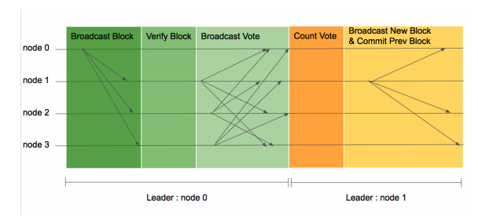

LFT Normal Case¶

이미지 기본 설명
- 각 수평선은 블록체인 네트워크에 참여하는 노드를 나타내며 화살표는 한 노드가 다른 노드에 보내는 메시지를 의미합니다.
- 네트워크 이벤트의 순서는 왼쪽에서 오른쪽으로 일어난다. 따라서, 왼쪽에서 일어난 이벤트가 오른쪽에서 일어난 이벤트보다 먼저 일어난 이벤트입니다.
- 가장 밑의 평행선은 기간에 따른 리더를 표시하고 있습니다.
LFT 합의 순서
- 합의가 시작되면 검증 노드들은 리더 노드에 처리하기 원하는 트랜잭션을 전송합니다.
- 리더 노드는 수집한 트랜잭션을 이용하여 블록을 생성하고 자신의 서명과 함께 다른 모든 검증 노드에 전송합니다.(Broadcast Block)
- 각 검증 노드들은 블록을 받으면 다음의 순서로 검증합니다
- 현재 리더가 블록을 생성했는지 확인합니다.
- 블록의 높이와 이전 블록 해시가 올바른지 확인합니다.
- 블록의 메시지가 올바른지 확인합니다.(Verify block).
- 검증 노드는 검증 결과에 따라 투표 메시지를 모든 노드들 에게 보냅니다.(Broadcast Vote)
- 각 노드가 정족수 이상의 투표를 받게 되면 해당 높이의 블록을 자신의 블록체인에 추가합니다.(Count Vote). 리더 노드는 정족수 이상의 투표를 받으면 해당 높이의 블록 생성을 성공으로 처리합니다.
- 다른 노드에서 받은 트랜잭션을 모아 새로운 높이의 블록을 생성하고 다른 모든 피어에 새로운 높이의 블록 메시지를 보냅니다.